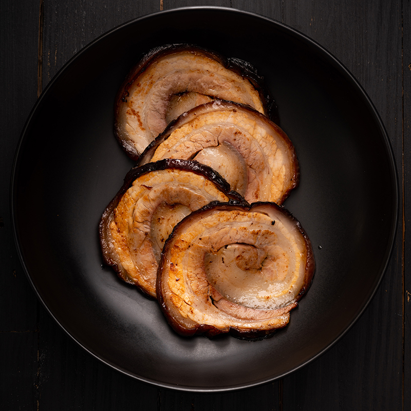

Marion's Chashu Pork

Description:
Love the gorgeous braised, sliced pork served with Japanese ramen? My version of chashu is so simple,
although it does need some forward planning, so be sure to leave time for overnight cooling. Try serving
this epic, soft pork belly with steamed rice or salad, too. Get ready to roll, people!
Ingredients
- 2.6 lbs Pork Belly
- 1 Cup Soy Sauce
- 1/3 Cup Sugar
- 1/3 Cup Mirin
- 1/3 Cup Sake
- 1 Tbsp Vegetable Oil
- 1 Cup Water
- 1.5 inch Ginger, Sliced
- 2 Garlic Cloves, Lightly Crushed
Steps
-
Roll the pork belly up tightly to form a cylinder shape. Tie string around the pork belly at regular intervals so that
it keeps its shape while cooking.
- In a bowl, mix together the soy sauce, sugar, mirin, sake and 1 cup of water.
- Preheat the oven to 250°F.
-
Heat the vegetable oil in a deep, oven proof pan or dutch oven over high heat. Add the pork belly and sear on all sides
for about 2 minutes per side of until evenly golden in color. Pour over the soy sauce mixture. Add the ginger and garlic.
Then top up with extra water until at least half the pork belly is submerged. Cover with a lid and cook in the oven for
3 hours, turning the pork every half an hour. Alternatively, cover and reduce the heat to low on the stovetop and simmer
for 3 hours, turning every half an hour.
- Let the pork and braising liquid cool to warm. Then transfer both to a large bowl, cover and refridgerate overnight.
-
The next day, remove the fat from the top of the braising liquid. Transfer the pork to a cutting board. Remove the string
and slice into thin pieces. Before serving heat the pork slices in a non-stick frying pan until golden.